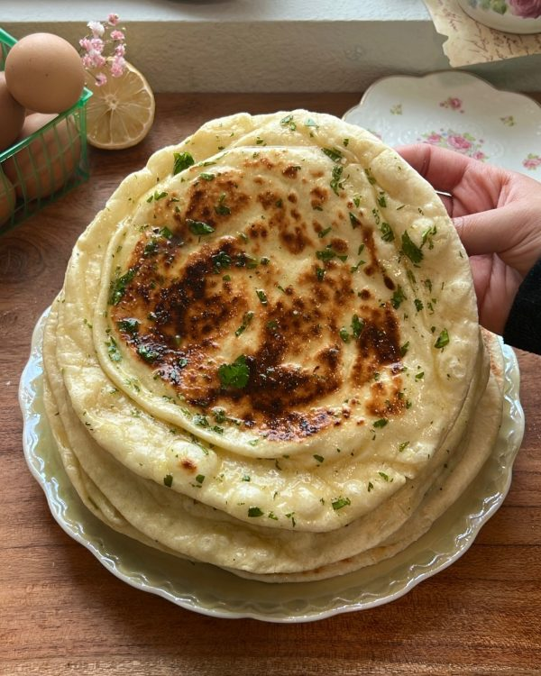

Garlic Naan

Garlic naan is a soft and chewy bread infused with
rich flavors. With every bite, you'll experience the
delicious flavor of warm,fluffy bread,savory garlic, and
rich buttery ghee.
Today we’re making the fluffiest Garlic Naan!
If you have experience with baking bread, making
Naan should be a simple task for you. The end
result is a soft and fluffy bread with a slight
chewiness, infused with the rich flavors of garlic
and ghee. The garlic adds a pungent and slightly
spicy flavor to the bread, while the ghee imparts
a rich, buttery taste and helps to keep the naan
moist and tender.
INGREDIENTS
Yeast mixture
- 1 cup Warm water
- 1 tbsp Active dry yeast
- 1/2 tbsp Sugar
Rest of the ingredients
- 4 cups All purpose flour
- 2tsp Kosher salt
- 3/4 tsp Baking soda
- 3/4 tsp Baking Powder
- 3/4 cup Plain Yogurt
- 1/4 cup Olive oil
Optional ingredients to add to your dough
- 6-10 Garlic cloves minced
- Handful freshly chopped cilantro
Garlic Ghee topping
- 1/2 cup High quality Ghee, melted
- 1 tbsp Garlic Powder
- 3 tbsp Freshly chopped cilantro
INSTRUCTIONS
- In a large mixing bowl, add in your yeast mixture. Cover with a damp
cloth and let it rest for 10 minutes.
- After 10 minutes, combine the rest of your ingredients in the large
mixing bowl. You can either use a stand mixer or knead the dough with
your hands. Knead until the dough comes together and forms a smooth
ball. About 10 minutes.
- If you're kneading the dough by hand; on a floured surface, knead the
dough for 10-15 minutes until it's smooth and elastic. The dough
should not stick to your hands or the surface.
- Place the dough in a lightly floured bowl and cover it with a damp
cloth. Let it rise in a warm place for 1-2 hours until it doubles in size
- One helpful tip to ensure your naan dough rises properly is to preheat
your oven to 175°F, then turn it off. Once the oven is warm, cover your
dough and place it inside to rise. This warm, draft-free environment will
help to activate the yeast and allow the dough to rise to perfection
- After your dough has doubled in size, punch down the dough and
divide it into equal portions. Each one of my dough balls weighed
around 78-80 grams
- Cover your dough balls and allow them to rest for 15 minutes with a
damp cloth
- Roll each portion into a ball and flatten it into a disk on a lightly floured
surface. Use a rolling pin to roll out the dough into an oval shape, about
1/4 inch thick
- Now, pick it up gently and stretch out your rolled-out naan dough.
Gently pick it up and give it a slight stretch, making sure to rotate the
dough as you go to ensure it remains an even thickness. It's important
to note that naan dough should be quite elastic, so it should stretch
easily without tearing or breaking. (watch video for reference)
- After you've rolled out and stretched your dough let them rest for 10
minutes before adding to your hot cast iron
- Preheat a cast iron pan for 5 minutes on medium heat before adding
your dough to it. Do not add any oil to your pan
- Cook your naan for about 2 minutes on each side until it's golden
brown and slightly charred. Flip the naan using tongs or a spatula and
cook the other side.
- Remember to not overcrowd the skillet while cooking the naan. It’s
best to cook one naan at a time to ensure even cooking. Also, be
careful while flipping the naan to avoid burning yourself or tearing the
bread
- To maintain the warmth and freshness of your naan while you bake the
remaining bread, it's a good idea to wrap it in a clean towel or
aluminum foil, which will help to trap in heat and moisture, keeping the
naan soft and tender until it's ready to be served. In case you're making
a larger batch of naan, you can keep them warm by placing them in a
low-temperature oven at around 200°F until you're ready to enjoy
them.
- Remove the naan from the skillet and brush it with your Ghee mixture.
- And you're done :,)